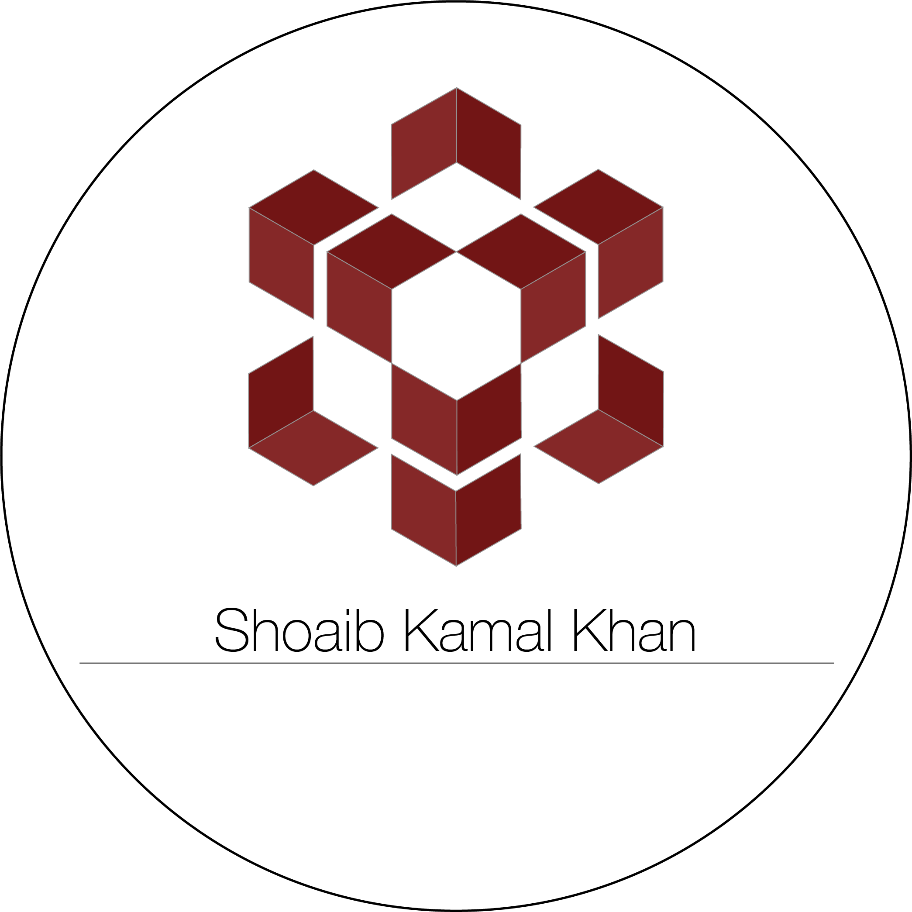

Interests
Pianist
I am an accomplished Classical and Jazz pianist. I have been studying and playing since 2009. I play guitar over arranged and composed breaks and loops in Logic Pro X from the following various geners Jazz, Drum & Bass, Ambient, Chillout, Downtempo and Soulful House and other styles of arranged and composed breaks and loops. I also record YouTube videos of all my tracks and jam sessions and make the audio and video media available to purchase through Apple Music and all other worldwide distributors and through the audio media portal SoundCloud. I use a Yamaha YDP-161 Digital Piano for all my arrangements and compostions recorded into Logic Pro X and mastered with LANDR.
Guitarist
I am an accomplished Jazz, Rock, Ambient and Classical guitarist. I have been studying and playing since 2015. I play guitar over arranged and composed breaks and loops in Logic Pro X from the following various geners Jazz, Drum & Bass, Ambient, Chillout, Downtempo and Soulful House and other styles of arranged and composed breaks and loops. I also record YouTube videos of all my tracks and jam sessions and make the audio and video media available to purchase through Apple Music and all other worldwide distributors and through the audio media portal SoundCloud. I use an Epiphone Les Paul Traditional Pro Limited Edition in matte black for all my arrangements and compostions recorded into Logic Pro X and mastered with LANDR.
Rudimental & Drumset Drummer
I am an accomplished rudimental drummer and drumset drummer who plays Marching, Jazz, Funk, Drum & Bass, House, and Downtempo. I also record YouTube videos of all my tracks and jam sessions and make the audio and video media available to purchase through Apple Music and all other worldwide distributors and through the audio media portal SoundCloud. I use a 12-inch Vater Double-Sided Practice Pad and a Sonor AQ2 Series Bop Kit with Meinl Byzance Series Cymbals for all my arrangements and compostions recorded into Logic Pro X and mastered with LANDR.
Dj/Mixing Artist
I am an accomplished Dj/Mixing Artist. I have been playing as a Dj/Mixing Artist since 1994. I play Soulful House, Drum & Bass, Downtempo, Ambient and Chillout. I make all of my mixes available for download through podcasts on Apple Music and through the audio media portal SoundCloud. I use Pioneer CDJ-2000NXS2 Players and Technics SL-1200MK7 Turntables with Serato DJ and I also use vinyl. All of my performances recorded into Logic Pro X and are mastered with LANDR.
Music Producer
I am an accomplished Music Producer. I have been producing since 1999. I make arrangements and compostions of Ambient Drum & Bass, Drum Funk, Neurofunk, Downtempo, Soulful House, Ambient and Chillout and other styles. I use mostly royalty free and original content as my sound sources. I use a Native Instruments Komplete Kontrol S88 88 Key MIDI Controller and an Apple MacBook Pro and Logic Pro X for all my arrangements and compostions. All of my tracks are mastered with LANDR.
SoundCloud Page
Please see my SoundCloud page for all my audio media:
 Shoaib Kamal Khan Music